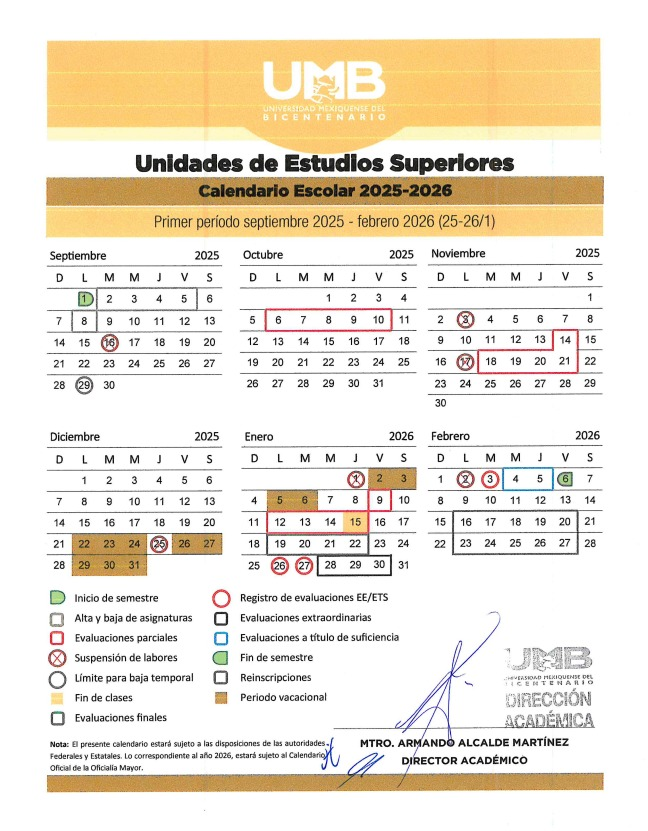

Admisiones
En la UMB San José del Rincón buscamos formar profesionistas íntegros, críticos y comprometidos. Aquí encontrarás toda la información para aspirantes, procesos, fechas importantes y documentación requerida.
Calendario Escolar 2025-2026
Procesos de Admisión
- Registro de aspirantes: del 1 de junio al 30 de julio de 2025.
- Examen de admisión: 1 de julio de 2025.
- Resultados de admisión: 15 de julio de 2025.
- Inscripciones: del 20 de julio al 5 de agosto de 2025.
Requisitos
- Certificado de estudios de educación media superior.
- Acta de nacimiento actualizada.
- CURP.
- Identificación oficial vigente.
- Comprobante de pago del examen de admisión.